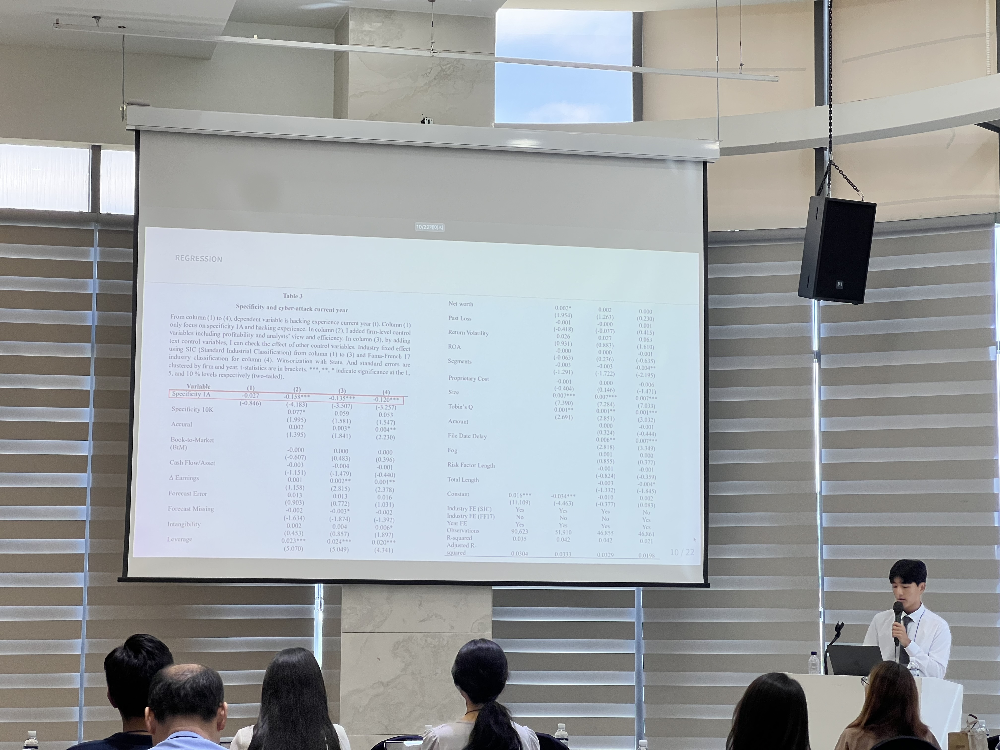

Disclosure
How firms communicate risk, uncertainty, and strategic information.
Research
How firms communicate risk, uncertainty, and strategic information.
Turning filings and transcripts into usable research measures.
Analyst disagreement, information transfer, and crash-risk prediction.
Working Papers
Working Paper in Progress · 2025-Present
Large-scale transcript evidence on whether evasive answers reduce information transfer.
SummaryResearch Paper · 2026
SEC 10-K disclosure specificity and rare-event prediction for future cyber incidents.
SummaryIndependent Quant Project · 2026-Present
Multi-asset BTC filtering with gold and oil signals.
SummaryPresentation
A moment from my presentation at the K-Datascience Conference.

Updates
May 2026
First author and poster presenter, Beijing.
Nov 2025
First author and oral presenter, Daejeon.
Aug 2025
First author, oral presenter, Future Researcher award.
Background
Hana Institute of Technology and FnGuide internships in AI and finance.
Contact